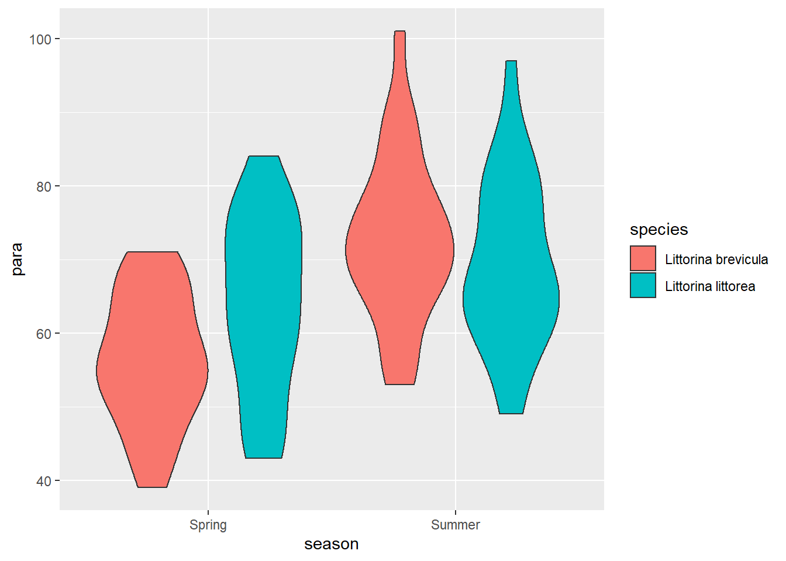
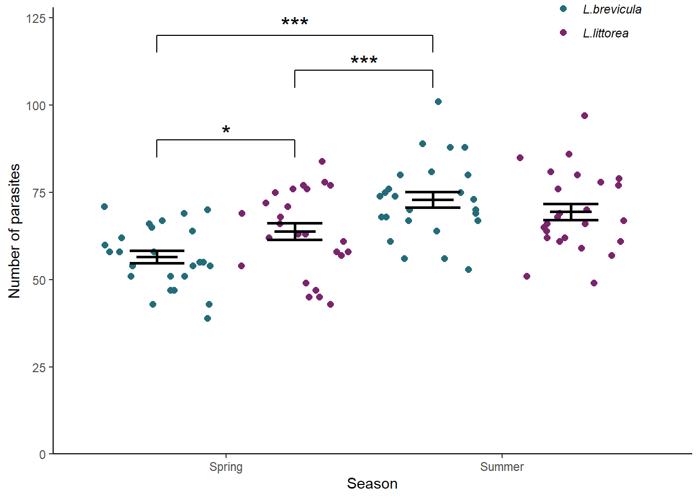

Chapter 10 Two-way ANOVA revisited
In this chapter we turn our attention to designs with two categorical explanatory variables. We first use the familiar aov() function to carry out a two-way ANOVA and then use our understanding to help us interpret the output of lm(). We will also make predictions from the model and report on our results.
10.1 Introduction to the example
Researchers have collected live specimens of two species of periwinkle (see Figure 10.1) from sites in northern England in the Spring and Summer. They take a measure of the gut parasite load by examining a slide of gut contents. The data are in periwinkle.txt.

Figure 10.1: Periwinkles are marine gastropod molluscs (slugs and snails). A) Littorina brevicula (PD files - Public Domain, https://commons.wikimedia.org/w/index.php?curid=30577419) B) Littorina littorea. (photographed by Guttorm Flatabø (user:dittaeva). - Photograph taken with an Olympus Camedia C-70 Zoom digital camera. Metainformation edited with Irfanview, possibly cropped with jpegcrop., CC BY-SA 3.0, https://commons.wikimedia.org/w/index.php?curid=324769
| para | season | species |
|---|---|---|
| 58 | Spring | Littorina brevicula |
| 51 | Spring | Littorina brevicula |
| 54 | Spring | Littorina brevicula |
| 39 | Spring | Littorina brevicula |
| 65 | Spring | Littorina brevicula |
| 67 | Spring | Littorina brevicula |
| 60 | Spring | Littorina brevicula |
| 54 | Spring | Littorina brevicula |
| 47 | Spring | Littorina brevicula |
| 66 | Spring | Littorina brevicula |
| 51 | Spring | Littorina brevicula |
| 43 | Spring | Littorina brevicula |
| 62 | Spring | Littorina brevicula |
| 55 | Spring | Littorina brevicula |
| 58 | Spring | Littorina brevicula |
| 43 | Spring | Littorina brevicula |
| 69 | Spring | Littorina brevicula |
| 71 | Spring | Littorina brevicula |
| 64 | Spring | Littorina brevicula |
| 58 | Spring | Littorina brevicula |
| 51 | Spring | Littorina brevicula |
| 70 | Spring | Littorina brevicula |
| 55 | Spring | Littorina brevicula |
| 47 | Spring | Littorina brevicula |
| 54 | Spring | Littorina brevicula |
| 43 | Spring | Littorina littorea |
| 63 | Spring | Littorina littorea |
| 58 | Spring | Littorina littorea |
| 61 | Spring | Littorina littorea |
| 63 | Spring | Littorina littorea |
| 45 | Spring | Littorina littorea |
| 45 | Spring | Littorina littorea |
| 77 | Spring | Littorina littorea |
| 57 | Spring | Littorina littorea |
| 49 | Spring | Littorina littorea |
| 72 | Spring | Littorina littorea |
| 47 | Spring | Littorina littorea |
| 78 | Spring | Littorina littorea |
| 77 | Spring | Littorina littorea |
| 71 | Spring | Littorina littorea |
| 69 | Spring | Littorina littorea |
| 66 | Spring | Littorina littorea |
| 76 | Spring | Littorina littorea |
| 75 | Spring | Littorina littorea |
| 54 | Spring | Littorina littorea |
| 62 | Spring | Littorina littorea |
| 58 | Spring | Littorina littorea |
| 76 | Spring | Littorina littorea |
| 68 | Spring | Littorina littorea |
| 84 | Spring | Littorina littorea |
| 61 | Summer | Littorina brevicula |
| 70 | Summer | Littorina brevicula |
| 68 | Summer | Littorina brevicula |
| 67 | Summer | Littorina brevicula |
| 88 | Summer | Littorina brevicula |
| 64 | Summer | Littorina brevicula |
| 69 | Summer | Littorina brevicula |
| 70 | Summer | Littorina brevicula |
| 56 | Summer | Littorina brevicula |
| 80 | Summer | Littorina brevicula |
| 80 | Summer | Littorina brevicula |
| 53 | Summer | Littorina brevicula |
| 56 | Summer | Littorina brevicula |
| 101 | Summer | Littorina brevicula |
| 81 | Summer | Littorina brevicula |
| 88 | Summer | Littorina brevicula |
| 67 | Summer | Littorina brevicula |
| 73 | Summer | Littorina brevicula |
| 75 | Summer | Littorina brevicula |
| 74 | Summer | Littorina brevicula |
| 68 | Summer | Littorina brevicula |
| 89 | Summer | Littorina brevicula |
| 75 | Summer | Littorina brevicula |
| 74 | Summer | Littorina brevicula |
| 76 | Summer | Littorina brevicula |
| 66 | Summer | Littorina littorea |
| 61 | Summer | Littorina littorea |
| 51 | Summer | Littorina littorea |
| 67 | Summer | Littorina littorea |
| 78 | Summer | Littorina littorea |
| 79 | Summer | Littorina littorea |
| 69 | Summer | Littorina littorea |
| 76 | Summer | Littorina littorea |
| 86 | Summer | Littorina littorea |
| 97 | Summer | Littorina littorea |
| 64 | Summer | Littorina littorea |
| 68 | Summer | Littorina littorea |
| 65 | Summer | Littorina littorea |
| 49 | Summer | Littorina littorea |
| 62 | Summer | Littorina littorea |
| 57 | Summer | Littorina littorea |
| 70 | Summer | Littorina littorea |
| 62 | Summer | Littorina littorea |
| 80 | Summer | Littorina littorea |
| 81 | Summer | Littorina littorea |
| 85 | Summer | Littorina littorea |
| 77 | Summer | Littorina littorea |
| 61 | Summer | Littorina littorea |
| 59 | Summer | Littorina littorea |
| 66 | Summer | Littorina littorea |
The data were collected to determine whether there was an effect of season or species on parasite load and whether these effects were independent.
There are 3 variables: species and seasonare categorical explanatory variables, each with two levels;
para, a continuous variable, is the response.
We can use the read_delim() function to import the data.
When visualising this data with ggplot() we need to account for both explanatory variables. We can map one to the x-axis and the other to a different aesthetic. Using the fill aesthetic works well for violin plots.
 Parasite load seems to be higher for both species in the summer and that effect looks bigger in L.brevicula - it has the lowest spring mean but the highest summer mean. Let’s create a summary of the data that will be useful for plotting later:
peri_summary <- periwinkle %>%
group_by(season, species) %>%
summarise(mean = mean(para),
sd = sd(para),
n = length(para),
se = sd / sqrt(n))| season | species | mean | sd | n | se |
|---|---|---|---|---|---|
| Spring | Littorina brevicula | 56.5 | 8.88 | 25 | 1.78 |
| Spring | Littorina littorea | 63.8 | 11.92 | 25 | 2.38 |
| Summer | Littorina brevicula | 72.9 | 11.24 | 25 | 2.25 |
| Summer | Littorina littorea | 69.4 | 11.44 | 25 | 2.29 |
The summary confirms both species have a higher mean in the summer and that the difference between the species is reversed - L.brevicula \(-\) L.littorea is -7.28 in the spring but 3.48 in summer.
10.2 aov() output reminder
The aov() function requires a model formula which includes both explanatory variables and the interaction between them in the familiar format: para ~ season * season . We also specify the data argument to indicate where the variables can be found:
The output of the summary() function gives us an ANOVA test:
summary(mod)
# Df Sum Sq Mean Sq F value Pr(>F)
# season 1 3058 3058 25.58 2e-06 ***
# species 1 90 90 0.75 0.387
# season:species 1 724 724 6.05 0.016 *
# Residuals 96 11477 120
# ---
# Signif. codes: 0 '***' 0.001 '**' 0.01 '*' 0.05 '.' 0.1 ' ' 1There was a significantly greater number of parasites in the Summer than the Spring (ANOVA: \(F\) = 25.58; \(d.f.\) = 1, 96; \(p\) < 0.001). There was no difference between the species when averaged across the seasons but there was significant interaction (ANOVA: \(F\) = 6.053; \(d.f.\) = 1, 96; \(p\) = 0.016) between season and species with higher numbers infecting L.littorea in the Spring whilst L.brevicula was more heavily parasitized in the Summer.
We need a post-hoc test to discover which comparisons are significant.
10.3 Post-hoc testing for aov
Tukey Honest Significant Difference test is carried out with:
TukeyHSD(mod)
# Tukey multiple comparisons of means
# 95% family-wise confidence level
#
# Fit: aov(formula = para ~ season * species, data = periwinkle)
#
# $season
# diff lwr upr p adj
# Summer-Spring 11.1 6.72 15.4 0
#
# $species
# diff lwr upr p adj
# Littorina littorea-Littorina brevicula 1.9 -2.44 6.24 0.387
#
# $`season:species`
# diff lwr upr p adj
# Summer:Littorina brevicula-Spring:Littorina brevicula 16.44 8.354 24.53 0.000
# Spring:Littorina littorea-Spring:Littorina brevicula 7.28 -0.806 15.37 0.093
# Summer:Littorina littorea-Spring:Littorina brevicula 12.96 4.874 21.05 0.000
# Spring:Littorina littorea-Summer:Littorina brevicula -9.16 -17.246 -1.07 0.020
# Summer:Littorina littorea-Summer:Littorina brevicula -3.48 -11.566 4.61 0.675
# Summer:Littorina littorea-Spring:Littorina littorea 5.68 -2.406 13.77 0.263The parasite load for L.brevicula increases significantly between spring and summer (\(p\) < 0.001) while that for L.littorea does not. Other significant comparisons are: the spring load of L.brevicula is lower than the summer load of L.littorea (\(p\) < 0.001); and summer load of L.brevicula is higher than the spring load of L.littorea (\(p\) = 0.02).
10.4 Two-way ANOVAs as linear models
The equation for a two-way ANOVA test is an extension of equation (9.1) for a one-way ANOVA test. It has the same form but an additional parameter. If there are two groups in each explanatory variable, the model is:
\[\begin{equation} E(y_{i})=\beta_{0}+\beta_{1}X1_{i}+\beta_{2}X2_{i}+\beta_{3}X1_{i}X2_{i} \tag{9.1} \end{equation}\]
The intercept, \(\beta_{0}\) is the value of the response when both categorical explanatory variables are at their “lowest” level. \(X1_{i}\) is a dummy explanatory variable which indicates the first explanatory variable changing to its second level. It toggles on and off the effects of \(\beta_{1}\). \(X2_{i}\) is a dummy explanatory variable which indicates the second explanatory variable changing to its second level and toggles on and off the effects of \(\beta_{2}\). \(\beta_{3}\) is the interaction effect. If \(X1_{i}\) and \(X2_{i}\) are both 1 \(\beta_{3}\) is the extra effect of that combination above the sum of \(\beta_{1}+\beta_{2}\)
The number of parameters in a two-way ANOVA design is: the number of levels in one explanatory \(\times\) the number of levels in the other explanatory. If each explanatory have three levels, there would be nine \(\beta s\)
A graphical representation of the terms in a linear model when there are two explanatory variables each with two groups (or levels) is given in Figure 10.2.
![A linear model with two explanatory variables each with two levels. ‘Variable 1’ has levels ‘A’ and ‘B’ and ‘Variable 2’ has levels ‘a’ and ‘b’. Thus there are 2 \(\times\) 2 = 4 groups: Aa, Ab, Ba and Bb. The measured response values are in pink and the predictions are in green. The residuals are not indicated. The estimated model parameters are indicated: \(\beta_{0}\) is the mean of group Aa; \(\beta_{1}\) is what has to be added to \(\beta_{0}\) to get the mean of group Ab; \(\beta_{2}\) is what has to be added to \(\beta_{0}\) to get the mean of group Ba; and \(\beta_{3}\) is what has to be added to \(\beta_{0}\) in addition to \(\beta_{1}\) and \(\beta_{2}\) to get the mean of group Bb. In this figure, all parameters are positive. Compare to Figure 5.2.](images/gen_two_way.svg)
Figure 10.2: A linear model with two explanatory variables each with two levels. ‘Variable 1’ has levels ‘A’ and ‘B’ and ‘Variable 2’ has levels ‘a’ and ‘b’. Thus there are 2 \(\times\) 2 = 4 groups: Aa, Ab, Ba and Bb. The measured response values are in pink and the predictions are in green. The residuals are not indicated. The estimated model parameters are indicated: \(\beta_{0}\) is the mean of group Aa; \(\beta_{1}\) is what has to be added to \(\beta_{0}\) to get the mean of group Ab; \(\beta_{2}\) is what has to be added to \(\beta_{0}\) to get the mean of group Ba; and \(\beta_{3}\) is what has to be added to \(\beta_{0}\) in addition to \(\beta_{1}\) and \(\beta_{2}\) to get the mean of group Bb. In this figure, all parameters are positive. Compare to Figure 5.2.
The intercept, \(\beta_{0}\)is the response when both explanatory variable is at their first group and all the other \(\beta s\) are given relative to this. The interaction parameters give the effect of the combination in addition to the sum of their independent effects
10.5 Applying and interpreting lm()
The lm() function is applied to the periwinkle example as follows:
Printing mod to the console gives us the estimated model parameters (coefficients):
mod
#
# Call:
# lm(formula = para ~ season * species, data = periwinkle)
#
# Coefficients:
# (Intercept) seasonSummer
# 56.48 16.44
# speciesLittorina littorea seasonSummer:speciesLittorina littorea
# 7.28 -10.76The first group of season is Spring and the first group of species is Littorina breviculaso \(\beta_{0}\) is the mean of L.brevicula in the spring, 56.48.
\(\beta_{1}\) is the coefficient labelled seasonSummer and means when the variable season takes the value Summer, \(\beta_{1}\) must be added to \(\beta_{0}\) - the mean of L.brevicula in the summer is \(\beta_{0}+\beta_{1}\) = 56.48 \(+\) 16.44 \(=\) 72.92.
The coefficient labelled speciesLittorina littorea is \(\beta_{2}\). When species becomes Littorina littorea, \(\beta_{1}\) must be added to \(\beta_{0}\) thus the mean of L.littorea in spring is \(\beta_{0}+\beta_{2}\) = 56.48 \(+\) 7.28 \(=\) 63.76.
If both season becomes Summer and species becomes Littorina littorea you would expect the effect to be \(\beta_{0}+\beta_{1}+\beta_{2}\). The coefficient labelled seasonSummer:speciesLittorina littorea, \(\beta_{3}\) is the effect that is additional to that sum. An interaction is when combined effect of two variables is more than just adding the independent effects. The mean of L.littorea in summer is \(\beta_{0}+\beta_{1}+\beta_{2}+\beta_{3}\) = 56.48 \(+\) rb1 \(+\) 7.28 \(+\) rb3 \(=\) 69.44.
More information including statistical tests of the model and its parameters is obtained by using summary():
summary(mod)
#
# Call:
# lm(formula = para ~ season * species, data = periwinkle)
#
# Residuals:
# Min 1Q Median 3Q Max
# -20.76 -6.13 -1.10 8.12 28.08
#
# Coefficients:
# Estimate Std. Error t value Pr(>|t|)
# (Intercept) 56.48 2.19 25.83 < 2e-16 ***
# seasonSummer 16.44 3.09 5.32 6.9e-07 ***
# speciesLittorina littorea 7.28 3.09 2.35 0.021 *
# seasonSummer:speciesLittorina littorea -10.76 4.37 -2.46 0.016 *
# ---
# Signif. codes: 0 '***' 0.001 '**' 0.01 '*' 0.05 '.' 0.1 ' ' 1
#
# Residual standard error: 10.9 on 96 degrees of freedom
# Multiple R-squared: 0.252, Adjusted R-squared: 0.229
# F-statistic: 10.8 on 3 and 96 DF, p-value: 3.55e-06The Coefficients table gives the estimated \(\beta_{0}\), \(\beta_{1}\), \(\beta_{2}\) and \(\beta_{3}\) again but along with their standard errors and tests of whether the estimates differ from zero. The estimated mean of L.brevicula in the spring is 56.48 \(\pm\) 2.187 and this differs significantly from zero (\(p\) < 0.001). The estimated difference between the L.brevicula in the spring and L.brevicula in the summer 16.44 \(\pm\) 3.093 and also differs significantly from zero (\(p\) < 0.001). The estimated difference between L.brevicula in the spring and L.littorea in the spring, 7.28 \(\pm\) 3.093 differs significantly from zero (\(p\) = 0.021).
The proportion of the variance in parasite load explained by the model is 0.252 and this is a significant proportion of that variance (\(p\) < 0.001).
As we are fitting three parameters in addition to the intercept our p-value for the model and the p-values for the \(\beta\) parameters differ. This was also true for one-way ANOVA.
Replacing the terms shown in Figure @ref(fig:gen_two_way) with the values in this example gives us 10.3.
![The annotated model with the values from the parasite load of preiwinkle example. The measured response values are in pink and the predictions are in green. The estimated model parameters are indicated: \(\beta_{0}\), the mean of L.brevicula in the spring, is 56.48; \(\beta_{1}\) is 16.44 thus the mean of L.brevicula in the summer 56.48 + 16.44 = 72.92; \(\beta_{2}\) is 7.28 thus the mean of L.littorea in the spring 56.48 + 7.28 = 72.92; and the L.littorea in the summer is \(\beta_{0}+\beta_{1}+\beta_{2}+\beta_{3}\) = 56.48 \(+\) 16.44 \(+\) 7.28 \(+\) -10.76 \(=\) 69.44. Compare to Figure 10.2.](images/peri_lm_eg.svg)
Figure 10.3: The annotated model with the values from the parasite load of preiwinkle example. The measured response values are in pink and the predictions are in green. The estimated model parameters are indicated: \(\beta_{0}\), the mean of L.brevicula in the spring, is 56.48; \(\beta_{1}\) is 16.44 thus the mean of L.brevicula in the summer 56.48 + 16.44 = 72.92; \(\beta_{2}\) is 7.28 thus the mean of L.littorea in the spring 56.48 + 7.28 = 72.92; and the L.littorea in the summer is \(\beta_{0}+\beta_{1}+\beta_{2}+\beta_{3}\) = 56.48 \(+\) 16.44 \(+\) 7.28 \(+\) -10.76 \(=\) 69.44. Compare to Figure 10.2.
10.6 Getting predictions from the model
We already have the predictions for all possible combinations of values of the explanatory variables because both are categorical.
However, the code for using predict is included here, as it was in the previous two chapters chapter, because it will make it easier to understand more complex examples later. We need to create a dataframe of values for which we want predictions and pass it as an argument to the predict() function.
To create a dataframe with one column of Species values:
predict_for <- data.frame(species = rep(c("Littorina brevicula", "Littorina littorea"), each = 2),
season = rep(c("Spring", "Summer"), times = 2))Remember! The variable and its values have to exactly match those in the model.
The to get the predicted myoglobin content for the three species:
10.7 Checking assumptions
The two assumptions of the model can be checked using diagnostic plots. The Q-Q plot is obtained with:
 The residual seem to be normally distributed.
The residual seem to be normally distributed.
Let’s look at the Residuals vs Fitted plot:

The residuals are equally spread around a horizontal line; the assumptions seem to be met.
10.8 Post-hoc testing for lm()
Instead of using the TukeyHSD() we will again use the glht() function from the multcomp package (Hothorn, Bretz, and Westfall 2008).
A relatively simple way to make all the pairwise comparisons is to create a new factor variable that indicates membership of one of the four groups. We can do that with the interaction() function:
| para | season | species | seasxspp |
|---|---|---|---|
| 58 | Spring | Littorina brevicula | Spring.Littorina brevicula |
| 51 | Spring | Littorina brevicula | Spring.Littorina brevicula |
| 54 | Spring | Littorina brevicula | Spring.Littorina brevicula |
| 39 | Spring | Littorina brevicula | Spring.Littorina brevicula |
| 65 | Spring | Littorina brevicula | Spring.Littorina brevicula |
| 67 | Spring | Littorina brevicula | Spring.Littorina brevicula |
| 60 | Spring | Littorina brevicula | Spring.Littorina brevicula |
| 54 | Spring | Littorina brevicula | Spring.Littorina brevicula |
| 47 | Spring | Littorina brevicula | Spring.Littorina brevicula |
| 66 | Spring | Littorina brevicula | Spring.Littorina brevicula |
| 51 | Spring | Littorina brevicula | Spring.Littorina brevicula |
| 43 | Spring | Littorina brevicula | Spring.Littorina brevicula |
| 62 | Spring | Littorina brevicula | Spring.Littorina brevicula |
| 55 | Spring | Littorina brevicula | Spring.Littorina brevicula |
| 58 | Spring | Littorina brevicula | Spring.Littorina brevicula |
| 43 | Spring | Littorina brevicula | Spring.Littorina brevicula |
| 69 | Spring | Littorina brevicula | Spring.Littorina brevicula |
| 71 | Spring | Littorina brevicula | Spring.Littorina brevicula |
| 64 | Spring | Littorina brevicula | Spring.Littorina brevicula |
| 58 | Spring | Littorina brevicula | Spring.Littorina brevicula |
| 51 | Spring | Littorina brevicula | Spring.Littorina brevicula |
| 70 | Spring | Littorina brevicula | Spring.Littorina brevicula |
| 55 | Spring | Littorina brevicula | Spring.Littorina brevicula |
| 47 | Spring | Littorina brevicula | Spring.Littorina brevicula |
| 54 | Spring | Littorina brevicula | Spring.Littorina brevicula |
| 43 | Spring | Littorina littorea | Spring.Littorina littorea |
| 63 | Spring | Littorina littorea | Spring.Littorina littorea |
| 58 | Spring | Littorina littorea | Spring.Littorina littorea |
| 61 | Spring | Littorina littorea | Spring.Littorina littorea |
| 63 | Spring | Littorina littorea | Spring.Littorina littorea |
| 45 | Spring | Littorina littorea | Spring.Littorina littorea |
| 45 | Spring | Littorina littorea | Spring.Littorina littorea |
| 77 | Spring | Littorina littorea | Spring.Littorina littorea |
| 57 | Spring | Littorina littorea | Spring.Littorina littorea |
| 49 | Spring | Littorina littorea | Spring.Littorina littorea |
| 72 | Spring | Littorina littorea | Spring.Littorina littorea |
| 47 | Spring | Littorina littorea | Spring.Littorina littorea |
| 78 | Spring | Littorina littorea | Spring.Littorina littorea |
| 77 | Spring | Littorina littorea | Spring.Littorina littorea |
| 71 | Spring | Littorina littorea | Spring.Littorina littorea |
| 69 | Spring | Littorina littorea | Spring.Littorina littorea |
| 66 | Spring | Littorina littorea | Spring.Littorina littorea |
| 76 | Spring | Littorina littorea | Spring.Littorina littorea |
| 75 | Spring | Littorina littorea | Spring.Littorina littorea |
| 54 | Spring | Littorina littorea | Spring.Littorina littorea |
| 62 | Spring | Littorina littorea | Spring.Littorina littorea |
| 58 | Spring | Littorina littorea | Spring.Littorina littorea |
| 76 | Spring | Littorina littorea | Spring.Littorina littorea |
| 68 | Spring | Littorina littorea | Spring.Littorina littorea |
| 84 | Spring | Littorina littorea | Spring.Littorina littorea |
| 61 | Summer | Littorina brevicula | Summer.Littorina brevicula |
| 70 | Summer | Littorina brevicula | Summer.Littorina brevicula |
| 68 | Summer | Littorina brevicula | Summer.Littorina brevicula |
| 67 | Summer | Littorina brevicula | Summer.Littorina brevicula |
| 88 | Summer | Littorina brevicula | Summer.Littorina brevicula |
| 64 | Summer | Littorina brevicula | Summer.Littorina brevicula |
| 69 | Summer | Littorina brevicula | Summer.Littorina brevicula |
| 70 | Summer | Littorina brevicula | Summer.Littorina brevicula |
| 56 | Summer | Littorina brevicula | Summer.Littorina brevicula |
| 80 | Summer | Littorina brevicula | Summer.Littorina brevicula |
| 80 | Summer | Littorina brevicula | Summer.Littorina brevicula |
| 53 | Summer | Littorina brevicula | Summer.Littorina brevicula |
| 56 | Summer | Littorina brevicula | Summer.Littorina brevicula |
| 101 | Summer | Littorina brevicula | Summer.Littorina brevicula |
| 81 | Summer | Littorina brevicula | Summer.Littorina brevicula |
| 88 | Summer | Littorina brevicula | Summer.Littorina brevicula |
| 67 | Summer | Littorina brevicula | Summer.Littorina brevicula |
| 73 | Summer | Littorina brevicula | Summer.Littorina brevicula |
| 75 | Summer | Littorina brevicula | Summer.Littorina brevicula |
| 74 | Summer | Littorina brevicula | Summer.Littorina brevicula |
| 68 | Summer | Littorina brevicula | Summer.Littorina brevicula |
| 89 | Summer | Littorina brevicula | Summer.Littorina brevicula |
| 75 | Summer | Littorina brevicula | Summer.Littorina brevicula |
| 74 | Summer | Littorina brevicula | Summer.Littorina brevicula |
| 76 | Summer | Littorina brevicula | Summer.Littorina brevicula |
| 66 | Summer | Littorina littorea | Summer.Littorina littorea |
| 61 | Summer | Littorina littorea | Summer.Littorina littorea |
| 51 | Summer | Littorina littorea | Summer.Littorina littorea |
| 67 | Summer | Littorina littorea | Summer.Littorina littorea |
| 78 | Summer | Littorina littorea | Summer.Littorina littorea |
| 79 | Summer | Littorina littorea | Summer.Littorina littorea |
| 69 | Summer | Littorina littorea | Summer.Littorina littorea |
| 76 | Summer | Littorina littorea | Summer.Littorina littorea |
| 86 | Summer | Littorina littorea | Summer.Littorina littorea |
| 97 | Summer | Littorina littorea | Summer.Littorina littorea |
| 64 | Summer | Littorina littorea | Summer.Littorina littorea |
| 68 | Summer | Littorina littorea | Summer.Littorina littorea |
| 65 | Summer | Littorina littorea | Summer.Littorina littorea |
| 49 | Summer | Littorina littorea | Summer.Littorina littorea |
| 62 | Summer | Littorina littorea | Summer.Littorina littorea |
| 57 | Summer | Littorina littorea | Summer.Littorina littorea |
| 70 | Summer | Littorina littorea | Summer.Littorina littorea |
| 62 | Summer | Littorina littorea | Summer.Littorina littorea |
| 80 | Summer | Littorina littorea | Summer.Littorina littorea |
| 81 | Summer | Littorina littorea | Summer.Littorina littorea |
| 85 | Summer | Littorina littorea | Summer.Littorina littorea |
| 77 | Summer | Littorina littorea | Summer.Littorina littorea |
| 61 | Summer | Littorina littorea | Summer.Littorina littorea |
| 59 | Summer | Littorina littorea | Summer.Littorina littorea |
| 66 | Summer | Littorina littorea | Summer.Littorina littorea |
We then rebuild the model using this one variable:
We have done a one-way ANOVA to obtain our post-hoc comparisons. The parameters in this model will be like those in a one-way ANOVA with \(\beta_{3}\) giving the amount you add to the intercept to get the fourth group mean. Then load the package:
We have to specify our contrasts as a matrix with the linfct (linear functions) argument and there is a multiple comparisons function, mcp(), to help.
This is the whole command:
You can read this as “do all of the pairwise comparisons between each group in seasxspp in the model mod using the Tukey test”.
We view the results with summary():
summary(mod_mc)
#
# Simultaneous Tests for General Linear Hypotheses
#
# Multiple Comparisons of Means: Tukey Contrasts
#
#
# Fit: lm(formula = para ~ seasxspp, data = periwinkle)
#
# Linear Hypotheses:
# Estimate
# Summer.Littorina brevicula - Spring.Littorina brevicula == 0 16.44
# Spring.Littorina littorea - Spring.Littorina brevicula == 0 7.28
# Summer.Littorina littorea - Spring.Littorina brevicula == 0 12.96
# Spring.Littorina littorea - Summer.Littorina brevicula == 0 -9.16
# Summer.Littorina littorea - Summer.Littorina brevicula == 0 -3.48
# Summer.Littorina littorea - Spring.Littorina littorea == 0 5.68
# Std. Error t value
# Summer.Littorina brevicula - Spring.Littorina brevicula == 0 3.09 5.32
# Spring.Littorina littorea - Spring.Littorina brevicula == 0 3.09 2.35
# Summer.Littorina littorea - Spring.Littorina brevicula == 0 3.09 4.19
# Spring.Littorina littorea - Summer.Littorina brevicula == 0 3.09 -2.96
# Summer.Littorina littorea - Summer.Littorina brevicula == 0 3.09 -1.13
# Summer.Littorina littorea - Spring.Littorina littorea == 0 3.09 1.84
# Pr(>|t|)
# Summer.Littorina brevicula - Spring.Littorina brevicula == 0 <0.001 ***
# Spring.Littorina littorea - Spring.Littorina brevicula == 0 0.093 .
# Summer.Littorina littorea - Spring.Littorina brevicula == 0 <0.001 ***
# Spring.Littorina littorea - Summer.Littorina brevicula == 0 0.020 *
# Summer.Littorina littorea - Summer.Littorina brevicula == 0 0.675
# Summer.Littorina littorea - Spring.Littorina littorea == 0 0.263
# ---
# Signif. codes: 0 '***' 0.001 '**' 0.01 '*' 0.05 '.' 0.1 ' ' 1
# (Adjusted p values reported -- single-step method)The results are the same as for using TukeyHSD() as we have done the same tests using a different function.
You can see what a contrasts matrix looks like by looking at the linfct variable of the glht object. You don’t need it now but in the future you may need to specify your own constrasts matrices so let’s have a look to make a step towards understanding:
mod_mc$linfct
# (Intercept)
# Summer.Littorina brevicula - Spring.Littorina brevicula 0
# Spring.Littorina littorea - Spring.Littorina brevicula 0
# Summer.Littorina littorea - Spring.Littorina brevicula 0
# Spring.Littorina littorea - Summer.Littorina brevicula 0
# Summer.Littorina littorea - Summer.Littorina brevicula 0
# Summer.Littorina littorea - Spring.Littorina littorea 0
# seasxsppSummer.Littorina brevicula
# Summer.Littorina brevicula - Spring.Littorina brevicula 1
# Spring.Littorina littorea - Spring.Littorina brevicula 0
# Summer.Littorina littorea - Spring.Littorina brevicula 0
# Spring.Littorina littorea - Summer.Littorina brevicula -1
# Summer.Littorina littorea - Summer.Littorina brevicula -1
# Summer.Littorina littorea - Spring.Littorina littorea 0
# seasxsppSpring.Littorina littorea
# Summer.Littorina brevicula - Spring.Littorina brevicula 0
# Spring.Littorina littorea - Spring.Littorina brevicula 1
# Summer.Littorina littorea - Spring.Littorina brevicula 0
# Spring.Littorina littorea - Summer.Littorina brevicula 1
# Summer.Littorina littorea - Summer.Littorina brevicula 0
# Summer.Littorina littorea - Spring.Littorina littorea -1
# seasxsppSummer.Littorina littorea
# Summer.Littorina brevicula - Spring.Littorina brevicula 0
# Spring.Littorina littorea - Spring.Littorina brevicula 0
# Summer.Littorina littorea - Spring.Littorina brevicula 1
# Spring.Littorina littorea - Summer.Littorina brevicula 0
# Summer.Littorina littorea - Summer.Littorina brevicula 1
# Summer.Littorina littorea - Spring.Littorina littorea 1
# attr(,"type")
# [1] "Tukey"It is matrix with a column for each parameter, in order) and a row for each contrast containing only 0s, 1s and -1s. The rows are named. The numbers are how the model parameters are needed to make the contrast and these can be understood by considering how the group means relate to the parameters.
- Spring.Littorina brevicula mean is \(\beta_{0}\)
- Summer.Littorina brevicula mean is \(\beta_{0} + \beta_{1}\)
- Spring.Littorina littorea \(\beta_{0} + \beta_{2}\)
- Summer.Littorina littorea \(\beta_{0} + \beta_{3}\)
Therefore:
* Summer.Littorina brevicula - Spring.Littorina brevicula is: \(\beta_{0} + \beta_{1} - \beta_{0} = \beta_{1}\) and there is a one in the seasxsppSummer.Littorina brevicula column and zeros else where
* Spring.Littorina littorea - Spring.Littorina brevicula is: \(\beta_{0} + \beta_{2} - \beta_{0} = \beta_{2}\) and there is a one in the seasxsppSpring.Littorina littorea column and zeros else where
* Summer.Littorina littorea - Spring.Littorina brevicula is: \(\beta_{0} + \beta_{3} - \beta_{0} = \beta_{3}\) and there is a 1 in the the seasxsppSummer.Littorina littorea column and zeros else where
* Spring.Littorina littorea - Summer.Littorina brevicula is: \(\beta_{0} + \beta_{2} - (\beta_{0} + \beta_{1}) = \beta_{2} - \beta_{1}\) and there is a 1 in the the seasxsppSpring.Littorina littorea column and a -1 in the seasxsppSummer.Littorina brevicula column
* Summer.Littorina littorea - Summer.Littorina brevicula is: \(\beta_{0} + \beta_{3} - (\beta_{0} + \beta_{1}) = \beta_{3} - \beta_{1}\) and there is a 1 in the the seasxsppSummer.Littorina littorea column and a -1 in the seasxsppSummer.Littorina brevicula column
* Summer.Littorina littorea - Spring.Littorina littorea is: \(\beta_{0} + \beta_{3} - (\beta_{0} + \beta_{2}) = \beta_{3} + \beta_{2}\) and there is a 1 in the the seasxsppSummer.Littorina littorea column and column and a -1 in the seasxsppSpring.Littorina littorea colum
10.9 Creating a figure
#summarise the data
ggplot() +
geom_point(data = periwinkle, aes(x = season,
y = para,
colour = species),
position = position_jitterdodge(dodge.width = 1,
jitter.width = 0.4,
jitter.height = 0),
size = 2) +
geom_errorbar(data = peri_summary,
aes(x = season, ymin = mean - se, ymax = mean + se, group = species),
width = 0.4, size = 1,
position = position_dodge(width = 1)) +
geom_errorbar(data = peri_summary,
aes(x = season, ymin = mean, ymax = mean, group = species),
width = 0.3, size = 1,
position = position_dodge(width = 1) ) +
scale_x_discrete(name = "Season") +
scale_y_continuous(name = "Number of parasites",
expand = c(0, 0),
limits = c(0, 128)) +
scale_colour_manual(values = pal4[1:2],
labels = c(bquote(italic("L.brevicula")),
bquote(italic("L.littorea")))) +
# Spring:Littorina brevicula-Summer:Littorina littorea *
annotate("segment",
x = 1.25, xend = 1.75,
y = 110, yend = 110,
colour = "black") +
annotate("segment",
x = 1.25, xend = 1.25,
y = 110, yend = 105,
colour = "black") +
annotate("segment",
x = 1.75, xend = 1.75,
y = 110, yend = 105,
colour = "black") +
annotate("text",
x = 1.5, y = 112,
label = "***", size = 6) +
# Summer:Littorina brevicula-Spring:Littorina littorea: ***
annotate("segment",
x = 1.25, xend = 0.75,
y = 90, yend = 90,
colour = "black") +
annotate("segment",
x = 1.25, xend = 1.25,
y = 90, yend = 85,
colour = "black") +
annotate("segment",
x = 0.75, xend = 0.75,
y = 90, yend = 85,
colour = "black") +
annotate("text", x = 1, y = 92,
label = "*", size = 6) +
# Summer:Littorina littorea-Spring:Littorina littorea: ***
annotate("segment",
x = 0.75, xend = 1.75,
y = 120, yend = 120,
colour = "black") +
annotate("segment",
x = 0.75, xend = 0.75,
y = 120, yend = 115,
colour = "black") +
annotate("segment",
x = 1.75, xend = 1.75,
y = 120, yend = 115,
colour = "black") +
annotate("text", x = 1.25, y = 123,
label = "***", size = 6) +
theme_classic() +
theme(legend.title = element_blank(),
legend.position = c(0.85, 0.98)) 
10.10 Reporting the results
to add: principle, sig, magnitude and direction of effects, test result, figure
See figure 10.4.
Figure 10.4: periwinkles blah blah
References
Hothorn, Torsten, Frank Bretz, and Peter Westfall. 2008. “Simultaneous Inference in General Parametric Models.” Biometrical Journal 50 (3): 346–63.